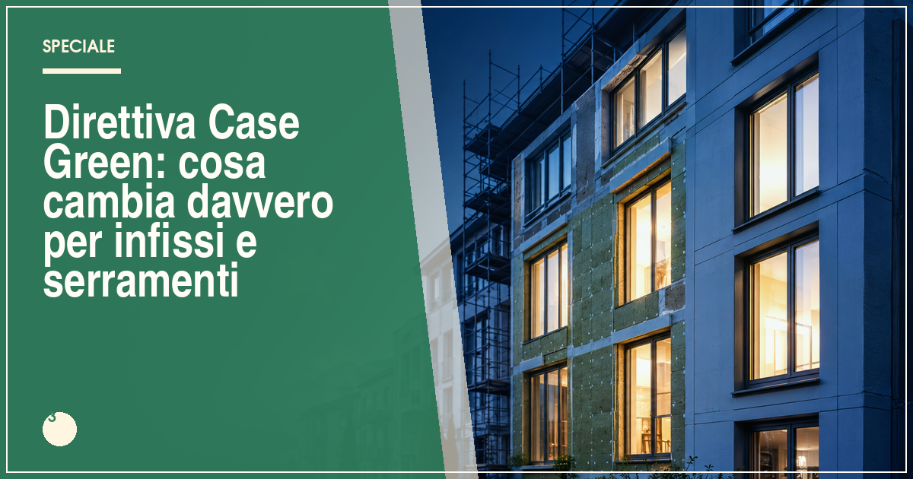

La direttiva Case Green (EPBD, direttiva UE 2024/1275) fissa obiettivi di decarbonizzazione degli edifici: nuove costruzioni a emissioni zero dal 2030 e riqualificazione progressiva del parco esistente verso il 2050. Non obbliga nessuno a cambiare subito gli infissi, ma renderà i serramenti performanti sempre più centrali in requisiti, incentivi e valore immobiliare.
In sintesi
- La direttiva EPBD (UE 2024/1275) punta a un parco edilizio decarbonizzato entro il 2050.
- Dal 2030 gli edifici di nuova costruzione dovranno essere a emissioni zero.
- Il recepimento nazionale era atteso entro maggio 2026, con decreti attuativi.
- Nessun obbligo immediato per i proprietari: la spinta passa da requisiti, incentivi e mercato.
- Serramenti performanti e schermature solari diventano componenti strategici dell'involucro.
Gli edifici europei sono responsabili di circa il 40% dei consumi energetici e di oltre un terzo delle emissioni di gas serra dell'Unione: è da questo dato che nasce la direttiva sulla prestazione energetica nell'edilizia, nota con la sigla EPBD (Energy Performance of Buildings Directive) e ribattezzata dai media "direttiva Case Green". Approvata nella sua ultima revisione nel 2024 (direttiva UE 2024/1275), rappresenta il quadro di riferimento entro cui si muoveranno nei prossimi decenni normativa nazionale, incentivi e mercato immobiliare.
Per chi si occupa di serramenti — e per chi deve decidere se e quando sostituire le finestre di casa — la direttiva non è un fulmine a ciel sereno, ma piuttosto una rotta: gli infissi, da elemento secondario dell'edificio, diventano protagonisti dell'efficienza energetica. Vediamo cosa prevede, con quali tempi e con quali conseguenze concrete.
Cos'è la direttiva Case Green e quali obiettivi fissa?
La direttiva Case Green è la revisione della normativa europea che dal 2002 regola la prestazione energetica degli edifici. L'obiettivo di fondo è portare l'intero parco edilizio dell'Unione verso la neutralità climatica entro il 2050, coerentemente con il Green Deal europeo. Per arrivarci, la direttiva fissa tappe intermedie: standard minimi di prestazione per gli edifici esistenti, l'obbligo di edifici a emissioni zero (ZEB, Zero Emission Buildings) per le nuove costruzioni dal 2030, il potenziamento degli attestati di prestazione energetica (APE) e l'introduzione di strumenti come il "passaporto di ristrutturazione" degli edifici.
Rispetto alle versioni precedenti, la revisione 2024 rafforza la logica del ciclo di vita: non solo i consumi in esercizio, ma anche l'impronta carbonica dei materiali entra progressivamente nel perimetro della valutazione, un aspetto che toccherà da vicino i produttori di serramenti e le loro dichiarazioni ambientali di prodotto (EPD).
Quali sono le tempistiche e le tappe principali?
La direttiva fissa un calendario che gli Stati membri devono tradurre in norme nazionali. La tabella riassume le tappe essenziali del percorso.
| Anno | Tappa | Cosa significa |
|---|---|---|
| 2024 | Entrata in vigore della direttiva UE 2024/1275 | Il testo è legge europea e va recepito dagli Stati |
| 2026 | Termine per il recepimento nazionale (maggio) | Decreti attuativi che aggiornano i requisiti energetici in Italia |
| 2028-2029 | Primi obblighi per edifici pubblici e strumenti di monitoraggio | Graduale applicazione degli standard minimi e dei nuovi APE |
| 2030 | Nuovi edifici a emissioni zero (ZEB) | Le nuove costruzioni non potranno più emettere CO₂ da combustibili fossili in loco |
| 2050 | Parco edilizio decarbonizzato | Obiettivo finale di neutralità climatica degli edifici |
Nota: le date di applicazione concreta in Italia dipendono dai decreti attuativi nazionali, che possono introdurre scaglioni e deroghe. Seguite gli aggiornamenti della redazione per le novità.
Cosa cambia per chi sostituisce infissi e serramenti?
Nessun obbligo immediato, ma tre conseguenze pratiche da tenere presenti. Primo: i requisiti tecnici diventeranno più esigenti. L'aggiornamento dei limiti di trasmittanza termica va letto proprio nel solco della direttiva: comprare oggi una finestra appena sufficiente rischia di renderla presto "vecchia" rispetto agli standard. Meglio puntare su valori Uw con margine rispetto al minimo di legge.
Secondo: il controllo solare estivo guadagna peso. La direttiva spinge su surriscaldamento e isola di calore urbana: schermature esterne, vetri selettivi e ventilazione controllata entrano stabilmente nella valutazione dell'involucro, non più come optional ma come componenti del bilancio energetico annuale.
Terzo: la documentazione conta di più. Tra APE potenziati e passaporto di ristrutturazione, le caratteristiche dei serramenti installati — trasmittanza, fattore solare, tenuta all'aria — saranno sempre più spesso registrate e verificabili. Conservare schede tecniche e dichiarazioni di prestazione diventa una buona pratica con valore economico.
Quali effetti su incentivi, prezzi e mercato immobiliare?
La direttiva chiede agli Stati di sostenere la riqualificazione con strumenti finanziari: in Italia il canale principale resta quello delle detrazioni fiscali, oggi rappresentato dal bonus serramenti con detrazione del 50%, cui potranno affiancarsi misure nazionali e regionali di attuazione. Gli analisti si aspettano che l'orientamento europeo renda strutturale — e non più episodica — la politica di incentivi per l'involucro edilizio.
Sul fronte immobiliare, la direttiva rafforza un meccanismo già visibile: la classe energetica influenza il valore degli immobili. Un appartamento con serramenti nuovi e prestazioni documentate si vende più facilmente e a condizioni migliori; gli edifici energivori rischiano nel tempo uno sconto di mercato. È uno dei motivi per cui, come raccontiamo nell'analisi del mercato serramenti 2026, la domanda si sta spostando verso prodotti a più alto contenuto prestazionale.
Come prepararsi: cinque mosse pratiche
- Anticipare gli standard: scegliere serramenti con trasmittanza sensibilmente migliore del minimo richiesto oggi.
- Pensare all'estate: prevedere schermature esterne o vetri a controllo solare, soprattutto su esposizioni sud e ovest.
- Curare la posa: le prestazioni valgono solo se il montaggio è corretto, secondo la norma UNI 11673.
- Documentare tutto: schede tecniche, DoP e attestati di posa aumentano il valore futuro dell'intervento.
- Informarsi sugli incentivi: tra detrazioni nazionali e misure regionali collegate al recepimento, le finestre di opportunità si apriranno a scaglioni.
Domande frequenti sulla direttiva Case Green
Cos'è la direttiva Case Green in parole semplici?
La direttiva Case Green, nome informale della direttiva europea sulla prestazione energetica nell'edilizia (EPBD), fissa obiettivi di riduzione dei consumi e delle emissioni degli edifici dell'Unione: nuovi edifici a emissioni zero dal 2030 e un percorso di riqualificazione del parco esistente verso la neutralità climatica al 2050.
Quando entra in vigore la direttiva Case Green in Italia?
La direttiva UE 2024/1275 è entrata in vigore nel 2024 e gli Stati membri dovevano recepirla nell'ordinamento nazionale entro maggio 2026. In Italia il recepimento avviene attraverso decreti attuativi che aggiornano i requisiti energetici degli edifici: le regole operative si applicano con le tempistiche fissate dai decreti nazionali.
La direttiva Case Green obbliga a sostituire gli infissi di casa?
No, la direttiva non impone al singolo proprietario l'obbligo immediato di sostituire gli infissi. Stabilisce però obiettivi di miglioramento energetico del parco edilizio che si tradurranno, nel tempo, in requisiti più stringenti, incentivi mirati e maggior valore di mercato per gli immobili riqualificati.
Ci saranno nuovi incentivi legati alla direttiva Case Green?
La direttiva chiede agli Stati membri di sostenere la riqualificazione energetica con strumenti finanziari e incentivi. In Italia il canale principale resta il sistema delle detrazioni fiscali, come il bonus serramenti con detrazione del 50%, che potrà essere integrato da misure nazionali e regionali di attuazione.
Fonti e riferimenti ufficiali
Le informazioni di questo articolo fanno riferimento alla documentazione ufficiale degli enti competenti. Verifica sempre gli aggiornamenti sulle fonti primarie prima di prendere decisioni.